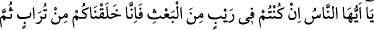
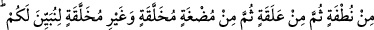
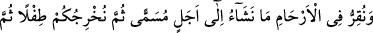
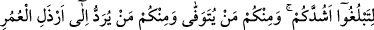
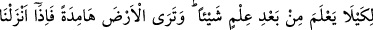
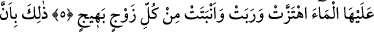
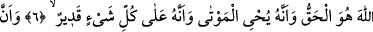
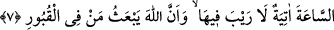
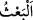

KUDRETİMİZİ GÖSTERMEK İÇİN
5. Ey insanlar! Eğer yeniden dirilmekten şüphede iseniz, şunu bilin ki, biz sizi
topraktan, sonra nutfeden, sonra alakadan (aşılanmış yumurtadan), sonra uzuvları
(önce) belirsiz, (sonra) belirlenmiş canlı et parçasından (uzuvları zamanla oluşan
ceninden) yarattık ki size (kudretimizi) gösterelim. Ve dilediğimizi, belirlenmiş bir
süreye kadar rahimlerde bekletiriz; sonra sizi bir bebek olarak dışarı çıkarırız.
Sonra güçlü çağınıza ulaşmanız için (sizi büyütürüz). İçinizden kimi vefat eder;
yine içinizden kimi de ömrün en verimsiz çağına kadar götürülür; ta ki bilen bir
kimse olduktan sonra bir şey bilmez hale gelsin. Sen, yeryüzünü de kupkuru ve ölü
bir halde görürsün; fakat biz, üzerine yağmur indirdiğimizde o, kıpırdanır, kabarır
ve her çeşitten (veya çiftten) iç açıcı bitkiler verir.
6. Çünkü Allah hakkın ta kendisidir; O, ölüleri diriltir; yine O, her şeye hakkıyla
kadirdir.
7. Kıyâmet vakti de gelecektir; bunda şüphe yoktur. Ve Allah kabirlerdeki
kimseleri diriltip kaldıracaktır.
“Ey insanlar!” Ey yeniden diriltilmeyi inkâr eden Mekke halkı! “Eğer yeniden
dirilmekten şüphede iseniz,”
“__WORD__ yerden/kabirden çıkarmak ve mahşere yürütmek demektir. Şüphe edenlerin çok
olmasına rağmen “şüphede iseniz” buyrulması, bu makamın şüpheyi kökünden söken bir
makam olduğunu belirtmek ve farz-ı muhal kabilinden olarak onu sadece farz etmekten
başka bir şeyin uygun olmadığını tasvir etmek içindir.
Eğer siz tekrar yaratmanın mümkün olduğundan, Allah Teâlâ’nın kudretinin ona